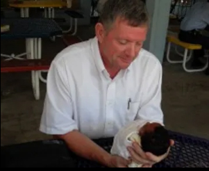
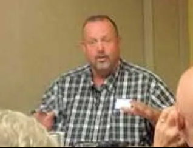
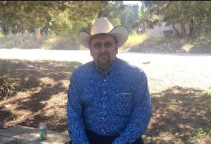
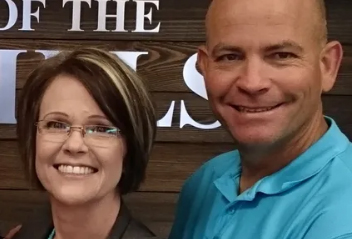

Refuge CMI
- Home
-
About
-
ST Missions
- Connections
- Donate
- Contact
- RCMI-SOM
Board of Directors
Dr. Paul & Marcy Olson
The Olson's are the founders and directors of RCMI. Paul earned his Doctor of Divinity from Master’s International School of Divinity. They've served as pastors, children’s evangelists, chaplains, trainers, and missionaries.
Fred Taylor
Fred is a founding board member 2003. While he has stepped down as a board member, he continues to be a close friend of the Olson’s since the early 80’s.
Mike Williams
Mike has been a board member and treasurer since 2014. He also serves on the board of Church of the Hills in Lometa, TX and is the founder of the Williams House, a shelter for children at risk. He has a heart for reaching the lost and helping the needy, and has been a faithful financial supporter of RCMI. We are excited to have him on Refuge CMI’s board.
Pastor Zane Mitchell
Pastors Deeper Life Christian Fellowship in Cleburne, TX . Prior to pastoring they were full time missionaries to the Philippines. They continue to send supplies and occasionally return to minister to the Philippine people. He joined our board in 2014.
Thomas Olson
Thomas Olson has been a part of Refuge CMI since its inception in 2003. He has been part of our mission trips over the years to Kenya and Belize. He has served on the RCMI board for a number of years, and is also our logistical coordinator.
Monte Carroll
Monte Carroll recently joined the RCMI board. Monte and his wife Amy have been on numerous short-term medical trips to Guatemala. They are our Guatemala Trip Team Leaders. They have also been avid fundraisers and monthly supporters for RCMI.